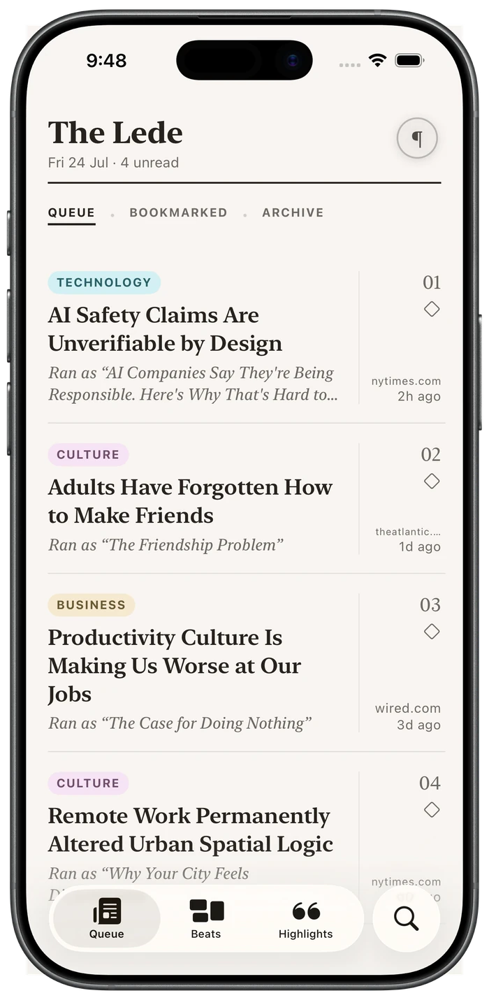
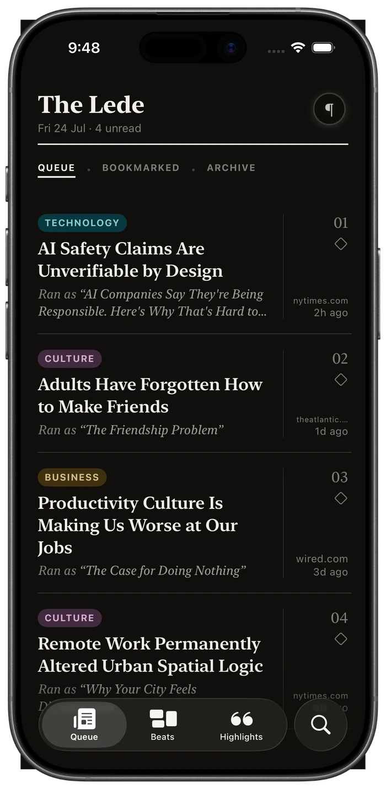

The millionaire who blamed avocado toast had his grandfather’s money.
Ran as “Millionaire: if you stopped buying avocado toast, you could afford a home”
As it ran
A Glass of Red Wine Equals an Hour at the Gym, New Study Finds
Unburies to
The “wine equals a workout” study was run on rats.
Save anything worth reading. The Lede reads it closely, unburies the real story, files it by beat, and writes the strongest honest case the piece can make. Your queue becomes a magazine, not a pile of tabs.
Coming to iPhone · one email when it opens
That address didn’t look like an email. Check it and send it again.
Something broke on our end and your address wasn’t saved. Please try again in a minute.
One email, when it opens. Nothing else, no list-sharing. The privacy policy covers it.
The queue
Every story comes back renamed for what it’s actually about and shelved on its beat. The queue reads like sections you pick by mood.
Ran as “Millionaire: if you stopped buying avocado toast, you could afford a home”
Ran as “London Is Still Paying Rent to the Queen on a Property Leased in 1211”
Ran as “Scientists Have Reached a Key Milestone in Reversing Aging”


The brief
Every save comes back as a short brief: the fairest version of the argument, enough to know what you’re dealing with. When something matters, send The Lede out to dig deeper: more reporting, other angles, an honest bottom line. It works the same on a news story, a how-to, or the history thread you fell into at midnight.
A note on sourcing
The Lede holds a standard for the reporting it briefs from. When the strongest account sits with a source it doesn’t trust, it builds the brief from a more solid one, and tells you it did. We explain exactly where that line is on the Sourcing standards page.
As it ran
Beer Was Banned in Iceland for Nearly 75 Years, Until 1989
Iceland banned beer for patriotism, not morality.
Dig deeper
Wine and spirits were legal again by the 1930s. Beer stayed banned because it stood for Denmark, the rival Iceland was breaking from. The first legal pint came in 1989.
“I built The Lede because I got tired of headlines that bury the story, or sell one that isn’t there.”Charles Klein, maker of The Lede
No account, ever. Your library lives in your own iCloud, and your first ten briefs each month are free.
That address didn’t look like an email. Check it and send it again.
Something broke on our end and your address wasn’t saved. Please try again in a minute.
One email, when it opens. Nothing else, no list-sharing. The privacy policy covers it.